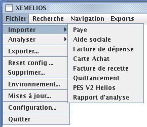
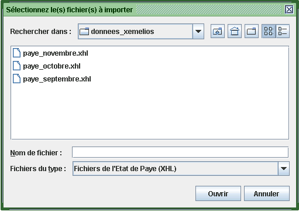
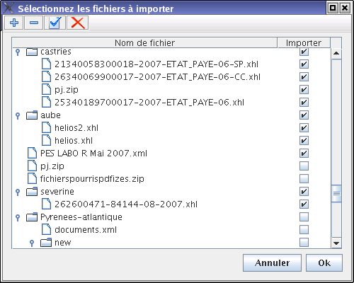
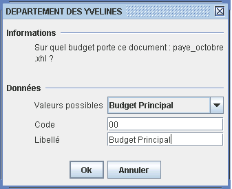
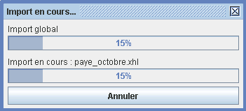
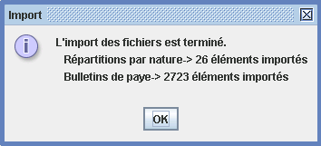
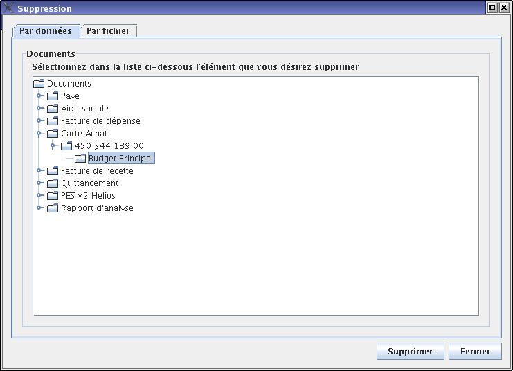
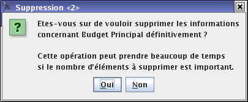

Importations et suppressions de documents
Avant de pouvoir exploiter des documents XML avec XéMéLios, il faut importer les fichiers générés par les progiciels comptables ou RH. Les exemples suivants sont réalisés avec des Documents de paye.
Les fichiers importables dans XéMéLios ont en général l'extension .xhl ou .xml. XéMéLios sait aussi importer des fichiers compressés au format ZIP.
L'importation permet à l'outil de prendre en compte les données transmises par l'ordonnateur pour effectuer des recherches.
Les données importées sont stockées dans la base XéMéLios et y seront conservées sans limitation de temps.
Important : il est fortement conseillé de copier les fichiers à importer sur le disque dur avant de les importer dans XéMéLios.
L'import direct de fichier depuis un CD-ROM dans XéMéLios peut poser des problèmes ; dans certains cas (CD-ROM sale, lecteur défectueux ou très ancien) le système n'arrive pas à lire les fichiers, XéMéLios affiche des messages d'erreur que l'utilisateur impute à tort à l'outil.
En copiant d'abord les fichiers sur le disque dur, c'est l'explorateur Windows qui remontera ce type d'erreur et non plus XéMéLios.
Un même fichier (i.e de même nom) ne doit être importé qu'une seule fois. Dans le cas d'un travail d'équipe sur des données en base partagée, il convient donc de confier la tâche d'importation à une seule personne (ayant les droits pour le faire). Si un fichier précédemment importé est réimporté, les anciennes données précédemment importées sont écrasées par les nouvelles ; ceci permet par exemple d'importer successivement plusieurs versions d'un même fichier et de ne conserver que les données les plus récentes.
Plusieurs fichiers peuvent être importés en même temps : dans ce cas, la barre de progression supérieure indique la progression de l'ensemble de l'import, la barre de progression inférieure indique la progression d'import du fichier en cours.
1 - Cliquez sur Fichier / importer et choisissez le type de document à importer.

2 - Sélectionnez le ou les fichiers à importer.

3 - Si vous avez séléctionné un répertoire, XéMélios vous propose de choisir dans ce répertoire et ses sous-répertoires les fichiers à importer :

4 - L'import démarre. Si XéMéLios n'arrive pas à déterminer sur quel budget porte un fichier en particulier, il affiche la boite de dialogue suivante :

Cette boite de dialogue permet à l'utilisateur de spécifier sur quel budget porte ce fichier. L'utilisateur peut sélectionner dans la liste l'un des budgets proposés (budget par défaut ou budgets pour lesquels il y a déjà des données), ou peut saisir un nouveau budget (code et libellé) dans les champs appropriés ; attention, ce libellé est réutilisé dans les fenêtres de recherche de XéMéLios.
5 - Pendant l'import, XéMéLios affiche une boite indiquant la progression de l'import. La ligne de progression supérieure indique la progression globale de l'import, la ligne inférieure la progression du fichier en cours. Lorsque l'utilisateur n'importe qu'un seul fichier, les deux lignes de progression avancent en même temps. Le temps d'import dépend grandement du volume des données à importer, mais aussi des performances de la machine ; à titre indicatif, une machine "standard" est capable d'importer 400 bulletins de paye par minute.

6 - A la fin de l'import, XéMéLios affiche une boite de dialogue indiquant le type et la quantité de données importées.

Pour supprimer des données importées, cliquez sur Fichier / Supprimer. Cette fonction n'est pas accessible aux utilisateurs ne disposant pas des droits d'écriture. Une boite de dialogue présentant les données précédement importées s'affiche. Ces informations sont présentées sous forme d'un arbre. L'utilisateur peut sélectionner n'importe quel niveau et cliquer sur Supprimer pour supprimer les données sélectionnées.

Dans cet exemple, les relevés de carte achat de la collectivité 450 344 189 00 pour le budget principal seront supprimés. Il est aussi possible de choisir les données à supprimer par fichier importé. Par mesure de sécurité, XéMéLios demande à l'utilisateur de confirmer la suppression des données.
